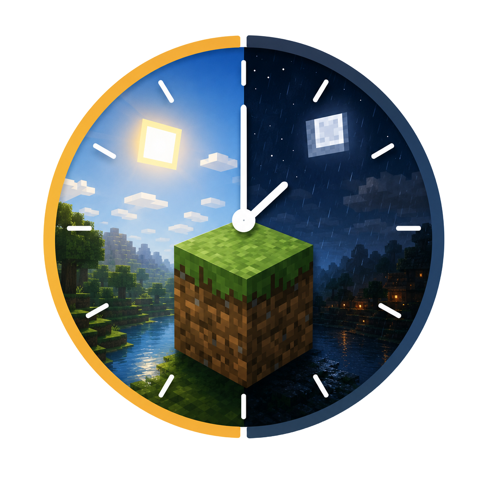

c'est maintenant

Atmosync est un mod Minecraft développé en 3 jours à Epitech par Loucas, Léo, Nathan et Cristiano. Il synchronise l'heure et la météo réelles avec le jeu, ajoute température, UV, fatigue, équipements de protection et un système de survie plus immersif. 🌍⛏️⏰